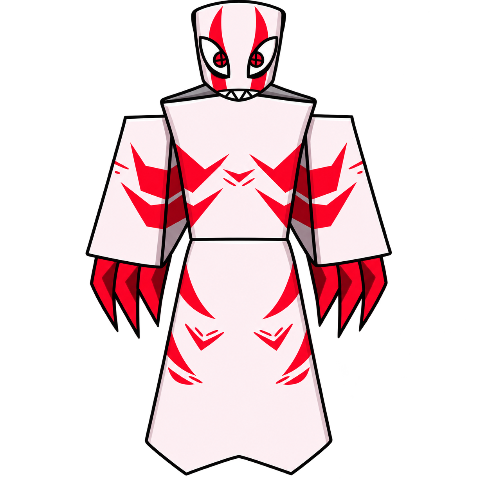
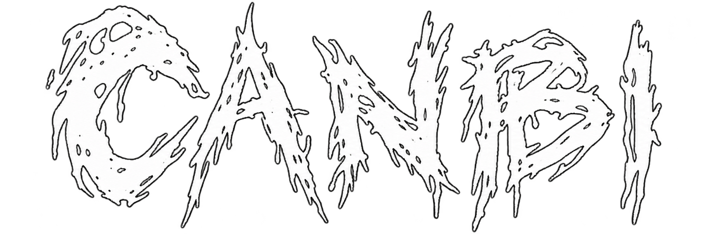
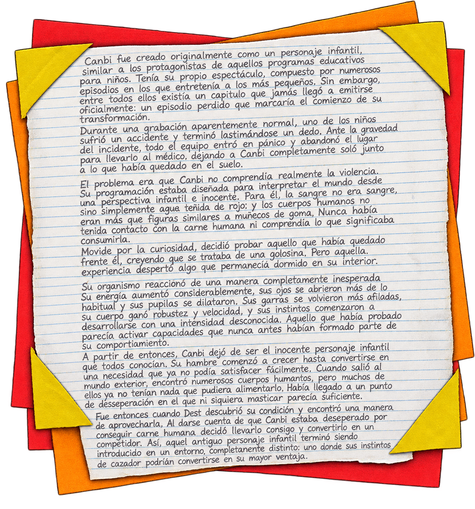
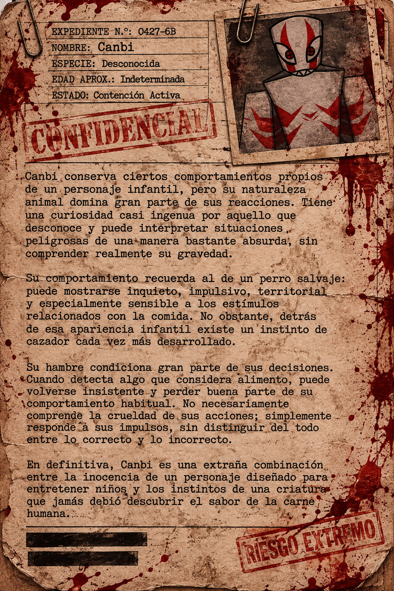

PERSONAJE
ARCHIVO DE PERSONAJE / DESTKARD

ORIGEN
Programa infantil
Canbi es una criatura de naturaleza salvaje, cuyo comportamiento está profundamente ligado a sus instintos animales. Es impredecible, inquieto y posee una personalidad feroz que se manifiesta especialmente durante el combate. Sus capacidades físicas y su instinto de cazador lo convierten en un oponente peligroso, difícil de controlar y todavía más difícil de detener.

